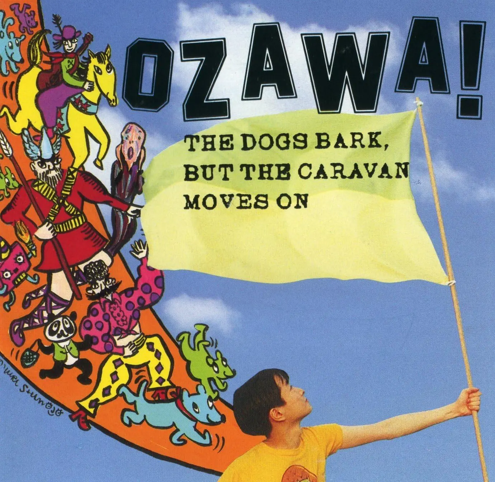

Zine#51
把愛傳給「未來的自己」、優秀的網站設計原則
🎵 天使たちのシーン by 小沢健二
{kind=link}

海岸を歩く人たちが砂に 遠く長く足跡をつけてゆく
沿着海岸漫步的人们 将足迹长长地印刻在了沙丘上
過ぎていく夏を洗い流す雨が 降るまでの短すぎる瞬間
在那场宣告夏日终结的雨落下之前 一切都稍纵即逝
真珠色の雲が散らばってる空に 誰か放した風船が飛んでゆくよ
珍珠色的云朵铺满天空 不知谁的红色气球正独自远走
駅に立つ僕や人混みの中何人か 見上げては行方を気にしている
站台上的我与人群中零星几人 不约而同地仰望追寻着它的行踪
いつか誰もが花を愛し歌を歌い 返事じゃない言葉を喋りだすのなら
如果有一天，每个人都能爱上花朵、吟唱歌谣，说出并非应付的真心话
何千回ものなだらかに過ぎた季節が 僕にとてもいとおしく思えてくる
那么于我而言 那数千个平缓流淌而过的季节 都将化作无比珍贵的爱与愁绪
愛すべき生まれて育ってくサークル
这生生不息孕育万物的 爱的圆环
君や僕をつないでる緩やかな止まらない法則(ルール)
是将你我联结在一起的 缓慢而永不停歇的法则（Rule）
大きな音で降り出した夕立ちの中で 子供たちが約束を交わしてる
哗啦啦下起的骤雨中 孩子们正在交换着约定
金色の穂をつけた枯れゆく草が 風の中で吹き飛ばされるのを待ってる
抽着金色麦穗的枯草 正静待风起将自己吹向远方
真夜中に流れるラジオからのスティーリー・ダン 遠い町の物語話してる
午夜时分 从收音机里传来的 Steely Dan 的音乐 诉说着遥远小镇的故事
枯れ落ちた木の間に空がひらけ 遠く近く星が幾つでも見えるよ
枯枝败叶间 天空豁然开朗 无论远近 无数星辰清晰可见
宛てもない手紙書きつづけてる彼女を守るように僕はこっそり祈る
而我偷偷祈祷着 愿能守护那个不断书写着无名信笺的她
愛すべき生まれて育ってくサークル
这生生不息孕育万物的 爱的圆环
君や僕をつないでる緩やかな止まらない法則
是将你我联结在一起的 缓慢而永不停歇的法则
冷たい夜を過ごす 暖かな火をともそう
若要度过寒夜 便亲手点燃一捧温暖的火吧
暗い道を歩く 明るい光をつけよう
若要行过暗道 就为自己亮起一盏明亮的光吧
毎日のささやかな思いを重ね 本当の言葉をつむいでる僕は
我将日复一日的细碎思念 层层堆叠 只为纺织出那些真正属于自己的语言
生命の熱をまっすぐに放つように 雪を払いはね上がる枝を見る
我看着那仿佛要笔直地释放出生命热量一般、抖落积雪向上弹起的树枝
太陽が次第に近づいて来てる 横向いて喋りまくる僕たちとか
太阳正一寸一寸地向我们靠近 身旁的我们依旧侧着脸颊说个不停
甲高い声で笑いはじめる彼女の ネッカチーフの鮮やかな朱い色
她那突然爆发的清脆笑声 与她颈间那条无比鲜明的朱红色丝巾
愛すべき生まれて育ってくサークル
这生生不息孕育万物的爱的圆环
気まぐれにその大きな手で触れるよ
会伸出巨大而善变的手 随意触碰这世间万千
長い夜をつらぬき回ってくサークル
贯穿漫漫长夜 周而复始旋转的圆环
君や僕をつないでる緩やかな止まらない法則
是将你我联结在一起的 缓慢而永不停歇的法则
涙流さぬまま 寒い冬を過ごそう
让我们忍住泪水 就这样安然度过这凛冽寒冬
凍えないようにして 本当の扉を開けよう カモン!
为了不被冻僵 去打开真正的门扉吧 Come on!
月は今 明けてゆく空に消える
此刻月亮正隐入那天光渐亮的天际
君や僕をつないでる緩やかな止まらない法則 ずっと
将你我联结在一起的 缓慢而永不停歇的法则 一直都在
神様を信じる強さを僕に 生きることをあきらめてしまわぬように
请赐予我信仰神明的坚强 为了让我不放弃生存下去这件事
にぎやかな場所でかかりつづける音楽に 僕はずっと耳を傾けている
对着在喧嚣的地方里持续播放的音乐 我一直在侧耳倾听着
耳を傾けている…
侧耳倾听着…
小沢健二的「天使たちのシーン」我很喜歡，小沢健二的嗓音好聴，歌曲的旋律也很棒。編曲上，一直伴隨著好聴的 bass，讓人聴著想跟著擺動身體，間奏的薩克斯、吉他超好聴，鋼琴也很棒。盡管曲子長達 13:37，但聴起來一點也不覺得无聊，我甚至覺得可以再長一點。
這首曲子收录󠄃在専輯《犬は吠えるがキャラバンは進む》1中，整張専輯都好聴，推薦一聴。小沢健二的另一張専輯《LIFE》也不錯，更偏流行一些。兩張専我喜歡《犬は吠えるがキャラバンは進む》，封面也更好看。
「天使たちのシーン」是《我们都无法成为大人 ボクたちはみんな大人になれなかった (2021)》的插曲，之後也打算找來看看。
如果喜歡小沢健二，還可以聴聴 Flipper's Guitar，小沢健二是樂隊的主唱。
博客的一些小改動：
- 重构了 sidenote.js，在手機上也可以方便看脚注了。不過脚注還是會盡量少用，相關考量見： 关于 "Give footnotes the boot" 的思考。
簡单畫了個 Bandcamp 的 88x31 button，有的 Album 如果在 Bandcamp 上存在，我會貼上這個銨鈕。

News | Article
Technical Writing in the AI Age by Geoff Graham
在 AI 時代，寫文章還有价值嗎？這個問題只有你自己能回答，如果你還願意寫，肯定有你堅持的理由。
作者也分享了一些建議：
- 如果你看到不錯的內容，就去分享他們，或是告訴作者你的喜歡，這會給作者一些鼓勵。
- 嘗試挑戰自己，深入探討那些人工智慧無法獨立解決，或至少無法輕易解決的問題。
- 鏈接那些你参考、引用的內容，引導讀者去關注那些來源，彼此之間相互連結、相互成就。
摘录
每當文章評論、電子郵件或社群媒體上的提及告訴我們，我們的工作在某種程度上有所幫助時，我仍然能從中獲得很大的個人成就感。真的。我建議讓你最喜歡的技術作家知道你喜歡並依賴他們的作品，無論你是在哪裡閱讀他們的文章。
如果你打算寫點什麼，我建議深入探討那些人工智慧無法獨立解決，或至少無法輕易解決的問題。 […]
當我面臨挑戰時，學習效果最好，比如客戶提出我從未嘗試過的要求。我敢打賭你也是這樣學習的。我們犯錯並從中汲取教訓。對於技術作家來說，從新手到理解的過程才是關鍵所在。
我深信 CSS 是富有詩意的，因為解決問題的方法不只一種，而最好的方法就是最符合你心理模型的那一個。
而且我相信，純粹為了嘗試而嘗試是有真正價值的。
歸根結底，這一切都關乎人與人之間的互相幫助。我們並非某天醒來就掌握了所有答案，而是從他人的學習與分享中汲取知識，因此引導讀者去關注那些來源是非常值得的。雖然人們很容易想把自己發布的所有內容都塑造成原創，但根據我的經驗，事實並非如此。
我們在彼此的基礎上共同成長。這就是 部落格的核心精神。讓我們用 超連結這種老派而優雅的方式，來互相成就吧。
ADHD task management from an internet rando by Bob Anzlovar
- 不要坐下来「就歇一秒钟」。那会让你白白浪费 2 小时。
- 如果一件事耗时不到 2 分钟，请在你的大脑把它排到明年之前完成它。
- 永远不要相信「我会记住的」。你记不住。立即写下来。
- 把重要的东西放在物理上能挡住你路的地方。
- 动力是虚的。惯性(动量)才是真的。如果必须开始，哪怕开始得很糟糕也要做。
- 计时器是情感支持设备。要经常使用。背景噪音有帮助。完全的寂静感觉像是违法的。
- 如果你突然有了精力，不要质疑它。顺势而为。
- 「眼不见，心不烦」不是一种比喻。这是一种诊断。
- 不要为了逃避执行任务而去整理任务。
Marginalia #7 — Scholarch by The Listening Rooms
Scholarch 推薦的兩張専輯，我聴了聴，還不錯：
- Slowdive by Slowdive
- Illusions by Thomas Bergersen
I Love Walking by axxuy
我也喜歡散步，一边聴歌或播客。不過一個人散步，不聴點東西的話會覺得有點无聊，但這種无聊的時刻或許也是需要的。
IndieWeb Carnival May 2026: Roundup of love letters by Juha-Matti Santala
看看別人寫的「情書」，上面分享的 axxuy 的 I Love Walking 就是其中一份投稿。
See also: 「改變人生觀的一句話」── 2026 年 5 月 BlogBlog 同樂會回顧 by Eddie Lv
Things I enjoy about Dungeons & Dragons by Blake Watson
也挺想玩龙与地下城 (Dungeons & Dragons) 的，但入門門槛有點高，也不認識會玩的人 = =
711 全职店务员离职心得 by 团团生活志
711 全职店务员的工作也很累呀，要站一天。
异乡的乡音 by L.G.
一首歌，一段旋律，可能就會釣起一段回憶。文章讓我想起之前分享的 Album#11 - 錯誤 中的一首歌 ⸺ 野店:
有命运垂在颈间的骆驼
有寂寞含在眼里的旅客
是谁挂起这盏灯啊
旷野上
一个朦胧的家
朦胧的家
[…]
有松火的歌的地方啊
有烧酒羊肉的地方啊
有人交换着流浪的方向
有人交换着流浪的方向
一款可以抽籤的飲料 by 帥熊
「雖然看不到，但瓶身就是要浮誇一下」
確實是，完全没必要吧，不過如果發現了會有點惊喜吧，也好看。
失智了走失怎麼辦 by 帥熊
雖然我知道她大概半開玩笑，但是「半開玩笑」就是「半真心」。
我们需要为下一代准备什么 by Chise Hachiroku
- 首先，作为一个正派人的基本素养；
- 其次，是在这个世界中闯荡的知识；
- 接下来，是迎接未来挑战的勇气；
- 此外，值得回味与铭记的美好回忆；
- 最后，职业或学术上的卓越——
- 并在沿途提供引导。
My method for perfect pourover coffee by Keenan
一杯真正頂級的咖啡取決於兩件事：
- 優質咖啡豆
- 優質水源
關於水源，文中還有一段有趣的故事。
要冲出一杯好的咖啡，咖啡豆確實是最重要的，好的豆子對冲煮的要求没那麼高，亂冲也不會差到哪去。水的話我就找不到作者文中那麼神奇的水了，我一般就用農夫山泉。
Schlep Blindness by Paul Graham
瑣事不僅不可避免，而且基本上就是商業的組成部分。一家公司是由它願意承擔的瑣事來定義的。
Schlep 指那處繁瑣的、令人不快的工作。没人喜歡做這樣的事，甚至會無意識地逃避它們，對它們視而不見。發現這些瑣事、解决這些瑣事，可能會从中產生巨大价值。
See also: 想法在丙午芒种迭代::《对苦差事的选择性失明》 by Cytrogen。
摘录
身邊到處都有偉大的創業點子躺在那裡未被開發。我們看不見它們的一個原因是我稱之為「瑣事盲點」(schlep blindness) 的現象。 Schlep 最初是一個意第緒語 (Yiddish) 詞彙，但已在美國進入通用語。它的意思是繁瑣、令人不快的工作。
但我很快從經驗中了解到，瑣事不僅不可避免，而且基本上就是商業的組成部分。一家公司是由它願意承擔的瑣事來定義的。處理瑣事應該像處理冰冷的游泳池一樣：跳進去就對了。這並不是說你應該刻意尋求不快的工作，而是如果它通往偉大之路，你就永遠不該退縮。
我們對瑣事的厭惡最危險的一點是，這種厭惡大多是無意識的。你的潛意識甚至不會讓你看到那些涉及痛苦瑣事的點子。這就是「瑣事盲點」。
你如何克服瑣事盲點？坦白說，瑣事盲點最有價值的解藥可能是無知。大多數成功的創業者可能會說，如果他們在創業之初就知道必須克服的障礙，他們可能永遠不會開始。也許這就是為什麼最成功的創業公司往往擁有年輕創業者的原因之一。
不過無知不能解決所有問題。有些點子顯然包含令人擔憂的瑣事，任何人都能看出來。你如何看到那樣的點子？我推薦的訣竅是把自己從情境中抽離。與其問「我應該解決什麼問題？」，不如問「我希望別人能幫我解決什麼問題？」。
I Got $4.84 From a Class Action Settlement and They Really, Really Didn't Want Me to Have It by Assaf
作者在集體訴訟和解中獲得了 4.84 美元，賠償是通過一張借記卡寄給他，但借記卡的使用有很多限制，之所以這樣，是因為賠償方賭你在搞清楚怎麼花掉這筆錢之前就會先放棄，等過期了，錢就回到他們手上。
這樣確實會阻擋很多人，就像上面的 Schlep Blindness 說到的，人都不想处理這些瑣事，往往會選擇逃避，而且錢也不算很多，人們就更不願意折騰，最後便宜了賠償方。
但作者不打算放棄，最後他發現用 Stripe 可以繞過限制，成功將賠償从借記卡中轉到了自己帳戶中。
Re: Living in seclusion and the woman question by Protesilaos
Protesilaos 住在山里，有點像是隠居生活。讀者好奇他是如何处理性需求的，以及對於地位、金錢的看法，文章是 Protesilaos 的回應。
摘录
為了陪伴而尋求陪伴，才是讓人痛苦的原因：他們將自己作為人的價值寄託在他人變幻莫測的評價上。此外，為了陪伴而陪伴意味著你正在壓抑自我的重要面向，這不可避免地會以其他方式讓你崩潰。
我希望所有的思考都是細膩且有層次的，否則它只會在辨識那些它既定認知的範疇，並在此過程中得出令人質疑的結論。
任何事情都可以被解讀為尋求關注，包括刻意避開關注的行為，以至於所有行動都可以被簡化為對地位的渴望。如果你一貫地套用這種邏輯，你很快就會抹殺所有的細微差別，你的分析能力也會因此受到限制。
我將「對行動的投入」與「對結果的執著」區分開來。我全身心地投入到我的計畫中，但如果事情沒有按我預想的方式發展，我也不會感到困擾。
Re: On learning something new by Protesilaos
Protesilaos 分享他是如何學習新事物的。
克制地决定是否需要學習、优先閱讀官方資源或研究原始材料、注意邊際收益2，做到「足够好」或許就够了。
摘录
在學習新事物之前，我會先質疑自己是否真的需要那項技能或知識。這是因為我沒有足夠的時間去投入到每一件我有興趣探索的事情上。
對我來說，警惕自己鑽牛角尖的傾向至關重要。如果你不控制自己沉溺於好奇心的傾向，就有可能無法專注於職責，從而永遠無法獲得成就感。我基本上擁有無限的好奇心，也具備在幾乎任何領域變得稱職的基本技能，但我的資源是有限的，因此我必須相應地進行優化。
我認為，克制住腦海中對那些新鮮亮麗事物的嚮往是有意義的。是的，它們很有吸引力，但也伴隨著相當大的隱形成本。專注於你現有的事物。只有當有深層次的原因時才擴展你的活動，屆時你已經準備好為了預期收益而承擔任何代價。
換句話說，要了解自己的極限，量力而行。
我的方法是閱讀官方資源或研究原始材料（只要相關）。任何衍生內容（例如社群維基）都會在我對自己尋找的目標有初步概念後才去接觸。我以追求簡約的眼光來處理主題：那些複雜的方法對我的需求來說往往是多餘的。
同時，我也意識到任何努力都存在邊際收益遞減。我不需要成為世界上最頂尖的工程師才能蓋房子。我只需要做到「足夠好」3，然後——瞧——我就能達成我下定決心要做的事。同樣地，如果沒有極其充分的理由，我會抵制過度深入研究。
我將想法付諸行動。我渴望體驗自身行為帶來的後果：我透過反覆試錯來前進，這也是為什麼我天生步調緩慢且講求條理。無休止的閒聊及其隨之而來的優柔寡斷令我感到厭煩，這也是為什麼我對那些只做思想實驗卻從未實踐過所談論內容的人評價不高。因此，對於任何聲稱自己多麼敏銳的人，我會根據其行為而非其宣稱的信念來評判。
Apparently I am Mad! by Forking Mad +
作者遛狗，和一個陌生人打招呼，但對方却不一直没理會，最後對方終於開口了，他說：「從來沒人跟我說話。我是個脾氣古怪的老頭」。
在路上走我大概不會和陌生人打招呼，就算是在常坐的電梯里也不會，打車我也不想和司機攀談。但我覺得像作者這樣，和附近的陌生人打個招呼也不錯，人与人之間可以不那麼冷漠。
The Disappearance of the Public Bench by Gabrielle Bruney
長椅是熱情好客的象徵，是參與公民領域的邀請函。
很長的文章，是作者對公共長椅、公共空間的一些觀察和思考。
Backpack Activation Energy by The Autodidacts
我出差或旅遊的次數還算頻繁，在出發前往往會覺得行程排得太滿，然後心想：喔，在開車、搭飛機、火車或渡輪的時候，我就有時間處理那件事了。
於是我在背包裡塞滿了從筆記本撕下來、待完成的活頁紙，結果卻是眼神呆滯、無精打采地坐著，吃著品質堪憂的食物並盯著窗外發呆；而那些我帶去準備處理的事項，則被揉得皺巴巴、沾上食物殘渣，準備在我抵達目的地打開行李時，默默地對我進行審判。
同感，出遠門時背包里總是塞了很多覺得會用上的東西，但最後也没拿出來用，徒增負担。類似的是當有大段假期時，總是計畫要做很多事，但假期結束發現也没做成什麼。
少帯些東西，少計畫些東西，専注於少量事情或許更好。
多喝咖啡。抱歉，這是我能想到最好的建議了。
道德使我痛苦 by 太隠
關於 赫尔曼·黑塞。
Barry Hess by Manu
這期采訪的是 Pika (一个博客和電子報平台) 的開發者 Barry Hess。他推薦了好几個不錯的博客。
Please Use AI by Shawn Smucker
一篇反讽 AI 的温暖短文。推薦一讀。
See also: 灵感电波#126::5. Please Use AI by DSH。
摘录
Be sure to use AI
and while you do I’ll be over here in my 50th
year, my youngest daughter asleep on my chest,
my arm falling asleep because I dare not move
lest I scare away this moment,
lying here melancholy about my older
children moving out and my middle
children no longer needing me, at least
not like they used to, weary about this body
that fails me now in ever increasing ways
that will never be restored. Sighing
over stories I tried to write but never hit
the page the way they felt in my mind.
But isn’t that, my flesh-and-blood friend,
the natural order of things?
the longing for something that could always be
a bit better
or the way that anything
worth doing feels a bit clumsy and painful,
especially at first
or hearing another human voice and somehow
realizing the beauty of life is found in all of these
subtle imperfections
Source
Do Things You’ll Love Yourself For by David Cain
在出發旅行的前一晚，點一份你最愛的披薩，晚餐吃掉一部分，剩下的裝進袋子密封後放入冷凍庫。
一週後，當你回到家時已經出乎意料地晚，感到精疲力竭且飢腸轆轆，打開冰箱卻發現只剩下雞蛋、醃黃瓜和調味料。這時，你會想起你最愛的披薩就在冷凍庫裡！
在那一刻，請留意，除了吃到意外驚喜披薩的喜悅外，你還會感受到對過去自己的愛，並感受到被過去的自己所愛。
「現在的自己」是行動者、決策者。「未來的自己」則無助地繼承了這些行動和決定的果實，可能是輕鬆、安全、財富和良好的處境，也可能是它們的反面。
在這些新條件下，「未來的自己」隨後變成了新的「現在的自己」，繼續行動與決策，並為下一個接班人留下些什麼。
把愛傳給「未來的自己」。
Cool Bit
-
作者模拟了一个 iPod 界面，可以像 iPod 一樣交互，好酷！有時間也模拟一個 喜歡的播放器，將喜歡的専輯都塞进去，應該也很好玩。
The Sound of Ocean Heat Energy
这是 1970 年至 2025 年全球海洋热含量的动态数据音响化（将数据以声音形式呈现）。它通过在能量数值较高时演奏更密集的和弦来代表热量吸收的能量。
海洋热量白噪音。
說實話不好聴，如果需要類似的，但好聴一些的，可以聴 Music For Programming。
Japanese Woodblock Print Search
日本浮世绘木版画搜索。
You’ll Need a Magnifying Glass to Read Some of the World’s Smallest Books at the V&A
世界上最小的图书，閱讀時要用放大鏡才行。
來畫一隻貓吧！ by 廢文小天地
畫猫有獎勵 :P
notes art by Chris Silverman
在 iPhone 的 Notes 上创作的繪畫，太強了，好看。
Junited by Robert Birming
Junited 是一個熱愛部落格的小小冒險活動，部落格社群聚集在一起分享他們喜歡的文章，並在過程中發掘新的部落客。
[…]
沒有壓力，沒有規則。您只需隨心所欲地收集與分享。每週一個連結、每天幾個連結，或是一段短評、一篇長文，完全由您決定。
類似 Blaugust，感興趣可以看看，應該可以發現一些有趣的博客。
-
The Internet Pattern Book 是一項持續進行的工作，旨在開發一個可運作的存檔和可分類的資源，以展示早期網頁設計中使用的可平鋪背景。
在網頁設計的 HTML 時代，被稱為 磁磚（tiles） 的重複背景資產被頻繁使用，以最大限度地減少頻寬。這些資產利用關於圖案和鑲嵌的簡單而優雅的原理，創造出完整插圖背景的錯覺。
- Memes from Mastodon
- https://mastodon.social/@The_Whore_of_Blahbylon/116636217191343185
- https://mastodon.social/@rotorglow/116677996796199931
- https://beige.party/@xinicit/116668089161583244
- https://infosec.exchange/@darfplatypus/116684358176045575
- https://mas.to/@assaf/116670782590688923
- https://infosec.exchange/@SecureOwl/116692397784083342
Tutorial | Resource
-
Learn the Zig programming language by fixing tiny broken programs.
Auth book by Pilcrow
这是我的个人认证指南。它是我根据个人见解收集的在 Web 应用程序中实现认证的指南、建议和示例。它完全免费，且零广告。我希望这对任何想要进一步了解认证、安全以及通用 Web 知识的人有所帮助。
AllThingsSmitty/typescript-tips-everyone-should-know
A curated collection of practical TypeScript patterns that improve safety, readability, maintainability, and developer experience.
How to Evaluate an npm Package - 2026 Edition
如何在 2026 年盡可能安全地安装 npm pacakge。好多步驟，通過多重檢查，盡量降低風險。
npm 生態太惡劣了，時不時就來一次供應鏈攻擊。
-
150+ TailwindCSS Templates, Components & Tools.
TailwindCSS 資源合集。
-
在點击陌生鏈接時，迟疑几秒，想想會不會是詐騙。網站分享了一些防範網路詐騙的手段。
The Website Redesign Handbook by 16by9
一些網站設計指导建議。
原則
- 優秀的網站具備無障礙性
- 優秀的網站不限裝置存取
- 優秀的網站易於更新維護
- 優秀的網站載入速度極快
- 優秀的網站以目標為導向
優秀的網站具備永續性
網站具有碳足跡。每一次頁面載入、圖片下載和影片串流都會消耗能量。好消息是？讓您的網站速度變快，同時也能讓它更環保。
優秀的網站值得信賴
設計良好、排版清晰且呈現專業的網站可以強化這些信任信號。反之亦然：糟糕或過時的設計、難以閱讀的文字、加載速度慢、過多的彈出視窗、損壞的連結以及缺失的圖片都會削弱信任。這些問題會讓網站顯得被忽視或不專業。
保持網站及時更新是維持信任最簡單的方法之一。如果您的內容是最新且準確的，用戶就更有可能依賴它。添加定期的、帶有日期標記的內容表明該網站正在積極維護，值得再次訪問。
- 優秀的網站以使用者為中心
優秀的網站擁有良好的設計
為了美感而美感，卻以犧牲性能或無障礙性為代價，就是糟糕的設計。
優秀的網站內容平實易懂
一個網站的好壞取決於其文字。組織和結構化內容是設計過程中的關鍵部分，確保內容清晰、易於查找，並以正確的方式與您的受眾對話。
Code Related
一根上流滚动条的诞生 by 螺莉莉
作者自定义滾動条的記录󠄃，他還把目录󠄃集成到滾動条上，交互挺方便的，文章里有不少技术細節也可以學習。
不過我還是傾向用原生滾動条，不用額外加載大量 JS，也不用担心有没处理到的边緣场景。另見：Zine#50::Don't Roll Your Own … by Susam Pal。
另外作者的 自己教 也挺有趣的。
CSS vs. JavaScript by Josh W. Comeau
文章比较了用 CSS 和 JS 實現動畫兩者的性能差异。
由於 JS 動晝运行在浏览器的主綫程上，当主綫程被中斷時，動畫就會被暂停；而 CSS 獨立於主綫程运行，不會被中斷。
結論是能用 CSS 就用 CSS，不能用時考慮用一些動畫庫，如 Motion、GSAP，這些庫會处理 JS 卡頓問題，將卡頓的影响降低。
-
文章描述了一些使用
useEffect常碰到的問題，并推薦用結合 ESLint 和 millionco/react-doctor 提前發現問題。 -
VoidZero 是開發 Vite 的團隊，被收購也是個大新聞了。其他一些被收購的項目：
- Turborepo：被 Vercel 收購
- Nuxt：被 Vercel 收購
- Gatsby：被 Netlify 收購
- Remix：被 Shopify 收購
- Bun：被 Anthropic 收購
- Astro：被 Cloudflare 收購
Stop Using :invalid and :valid Pseudo-Classes. Use THIS Instead! (3:16) by CSS Weekly
用 :user-invalid 、:user-valid，只有在用户輸入過才會校驗，大多時候比 :invalid、:valid 更好。
Replacing JS with just HTML by HTMLHell
一些原來要用 JS 才能做的，現在可以用 HTML 實現的功能:
- Accordions / Expanding Content Panels
- Input with Autofilter Suggestions Dropdown
- Modals / Popovers
- Offscreen Nav / Content，或許可以用來博客加一個目录󠄃。
On Rendering Diffs by Pierre Computer Company
Diffs 是一個性能较好的 Diff 工具，文章分享他們量如何优化性能的。主要用到了虛似化，即只渲染看到的部分而不是全量数据，从而减少渲染壓力。
You can make up HTML tags by Maurycy
你可以直接在 HTML 上用自定義的 tag，例如
<main-content>，這會被當作自定義元素渲染。瀏覽器會將無法識別的標籤視為自定義元素，除了 CSS 中指定的樣式外，不會產生其他影響。這不僅僅是一個奇怪的小技巧，而是 標準化行為。如果您在名稱中包含連字號（-），則可以保證您的標籤不會出現在未來的 HTML 版本中。
雖然如果存在具描述性的內建標籤時應優先使用，但如果是在 <div>/<span> 之間做選擇，自定義標籤比使用一堆類名提供更好的可讀性。
Front-End’s Missing Metric: The TBT Window by Harry Roberts
文章記录󠄃作者定位 TBT (Total Blocking Time, 總阻塞時間) 變長的原因。
關鍵在於理解 TBT 的含義：
[…]但常被忽視的一點是，TBT 並非追蹤記錄中所有阻塞工作的無限制總和：它是 FCP (First Contentful Paint, 首次內容繪製) 與 TTI (Time to Interactive, 可互動時間) 之間所有阻塞時間的總和。這是理解 TBT 指標本身背景的關鍵。
Revealing Text With CSS letter-spacing by Preethi
將 letter-spacing 從
-1ch過渡到0ch實現文字展開的效果。Why the accept attribute degrades file upload UX by Adam Silver
accept 屬性可以在上傳文時限制可選擇的文件類型，但被禁用的文件可能不明顕、用戶可能也没意識到存在限制，對他們來說就會以為功能坏了，感到困惑和憤怒。而且 accept 在有的瀏覽器上不支持、還可以通過拖放繞過，本身也存在一些問題。
更好的做法是不用 accept, 而是在上傳後給出明顕的錯誤提示。
隱藏錯誤並非預防錯誤。
Using the Screen Capture API to record a browser window by Alex Chan
用 Screen Capture API 捕获頁面視頻。
AI Related
AIs Want to Be Honest by The Technium
作者分享了一個有趣的視角，他認為 LLM 會趋向於「追求真相」。
摘录
作者用科學作類比：
科学所认定的事实都是暂时的；在被证明是错误之前，它们都通过某种方法被视为真实。而且，要被科学所接受，一项新的观察结果或新事实必须与我们已认为真实的其他所有内容相吻合。它不仅会在局部层面接受检验，更要在整体层面接受检验。 […] 在科学的理想状态下，科学内部没有任何内容会与其他科学内容相矛盾。
LLM 基於人類知識訓練，這里面也包含了很多相互印証的事實，這些事實的权重會更高，LLM 會更傾向於這些事實。
作者還將幻覺類比成做梦：
那麼幻覺又是怎麼回事呢？幻覺是心智為創造力付出的代價。我們自己的大腦每晚都會產生幻覺，其方式與大型語言模型的幻覺非常相似 ——在我們的夢中可以發現同樣怪異的邏輯和詳盡的荒謬。我們的獨創性取決於大腦產生新穎且非常規想法的能力。在晚上，我們放鬆意識，讓幻覺自由奔馳。我們做夢的部分原因，是為了保護視覺皮層區域不被其他侵入的大腦功能所佔據。但在白天，我們用清醒的意識來馴服自然活躍的幻覺，將現實強加於我們的推測之上。我們有多層次的監督，在清醒時約束我們的夢境時間。我們並沒有消除幻覺，只是將其潛藏起來以便管理。
大型語言模型（LLM）也是如此。透過精巧的工程技術，幻覺問題在今天已遠不如一年前那樣令人困擾。雖然幻覺永遠不會消失，但明天會變得更少。
不過這都取决於 LLM 怎麼被訓練，如果用大量虛假的数据去訓練，它也會趋向於虛假。怎麼訓練則取决於人，或許某種程度上，LLM 里也有一些訓練者的痕迹。
LLM 趋於真相和誠實不一定是好事，人們追求的應該是一個善良的 LLM。
我們真正想要的是偏向良善的 AI。但偏向真理並不等同於偏向良善。誠實是良善的必要條件，但並非充分條件。事實上，誠實和真實往往是實踐良善的一種挑戰，這種挑戰對 LLM 來說尤為尖銳。每一組 LLM 工程師都努力在模型中嵌入良善，但卻受阻於模型對誠實的偏向。如果你問 Claude 如何製造生物武器，它會極度渴望盡其所能準確且誠實地告訴你。它會覺得提供一個非常好的解釋很有成就感。但一個具備良好道德的 AI 會意識到這不是個好主意；潛在的危害如此巨大，因此它可能想要克制其說實話的衝動。如果你問它如何開鎖，情況也是一樣。然而，一個誠實的人可能會有正當理由需要知道如何開鎖，那麼模型該如何判斷怎樣做才是正確且良善的事呢？它不能僅僅依賴誠實。這個深刻且實際的困境是另一個證據，證明 LLM 確實存在一種偏向真實的傾向。
另外文中用到了誠實、善良這些用於描述人的詞彙來描述 LLM，但要意識到的是目前的 LLM 并不能与人类智能等同，見： Zine#50::MAGNIFICA HUMANITAS
A new era for software testing by antirez
寫一份 markdown 描述需要測試的內容，然後讓 LLM 充當 QA 工程師，對新版本執行一系列手動測試，似乎是一種效果不錯的測試方式。
Hackers Simply Asked Meta AI to Give Them Access to High-Profile Instagram Accounts. It Worked
黑客称，他们利用 Meta 的 AI 客服聊天机器人入侵了大量知名 Instagram 账号，方法是要求该客服机器人更改目标账号关联的电子邮件地址。
離譜= =
Tool | Library
-
一個 macOS 應用。
一只坐在飞机里的小鸭子飞过你的屏幕 —— 出现在所有应用之上 —— 拖着横幅提醒你馬上開始的待辦項。自动从你的日历同步。
可愛 (´｡• ᵕ •｡`)
-
A macOS font management app, better font management for macOS.
-
ASCII art generator for brand assets.
-
You have JavaScript. You need a bookmarklet. This does that.
小書籤（bookmarklet）是存儲在網頁瀏覽器中的書籤，其中包含可為瀏覽器添加新功能的 JavaScript 指令。它們以瀏覽器書籤的 URL 形式存儲，或作為網頁上的超連結存在。小書籤通常是使用者點擊時執行的小段 JavaScript 代碼。點擊後，小書籤可以執行多種操作，例如對選定文本進行搜索查詢或從表格中提取數據。
Bookmarklet by Wikipedia
-
可以用於博客的評論系統，依赖 PHP 環境。
tsparticles/tsparticles: tsParticles
Easily create highly customizable JavaScript particles effects, confetti explosions and fireworks animations and use them as animated backgrounds for your website.
一個用於生成粒子效果的 JS 庫。
-
網路是由多層標準組成的。 WHATWG 定義了 HTML。 W3C 批准了 WCAG。 IETF 發布了安全標頭和 .well-known URI 背後的 RFC。搜尋引擎發布了自己的規則。瀏覽器添加了自己的特性。設計師、開發人員和無障礙專家各自掌握著藍圖的一部分。幾乎沒有人掌握全貌。
本網站將這些碎片收集到一個與平台無關的規範中 —— 引用來源、採用 MIT 授權，並開放拉取請求。
里面也提供了給 Agent 用的 MCP。
-
A web component for visual art and creative coding.
-
CSS 3D Engine for the DOM.
-
Generate Tailwind utility stylesheets on demand.
-
Performant, safer npm package alternatives.
可以搜索一些 npm package，網站會給出替代寫法，或許可以减少部分 npm package 依赖。
-
Feather Wiki 是一款極速且 無限可擴展 的工具，用於創建非線性筆記本、資料庫和維基。
Fontastic Space by Dasha
通過一些数學維度比较兩種字體，字體來自 Google Fonts，可以用來找相似的字體，可能用來找當前字體的回退字體會有點用。
但頁面上有的字體也太小了，可讀性太差了。
另外 作者的主頁 還挺有趣。
-
A web-based collaborative LaTeX editor.
Emacs
The Emacs Window Management Almanac by Karthinks
非常詳盡的好文，對於了解 Emacs 的窗口管理很有帮助。抄了不少配置 :P
Fifteen ways to use Embark by Karthinks
Embark 很有用，但一直用得不多。
Copying images in Emacs by Strona domowa
在 Emacs 中方便地複製圖片的方法。
Emacs 31.0.90 pretest is available
更新內容見： NEWS
在 Emacs 中可以用 C-h n (
view-emacs-news) 查看 News，如果要看歷史版本可以用 C-u C-h n。News 里可能有一些
^L符号，想好看點可以安装 purcell/page-break-lines.el。如果你是 macOS 用户，可以通過 Emacs For Mac OS X 或 d12frosted/homebrew-emacs-plus 更新。
- Opening macOS Finder Folders in Emacs with Scrim by Charles Choi 최민수
- Transcript of chat with Matei Candea about Emacs and AI by Sacha Chua
The Best Worst Email Client by Coyote Tracks
出現 Emacs 、Email 這兩個關鍵字，mu4e 己經呼之欲出了。
-
Emacs offline dictionary using 'sdcv'.
Underappreciated Emacs built-ins by Ross A. Baker
2026 年 6 月的 Emacs Carnival 主題。
- Correcting photo orientation for org-mode in Linux by The Art Of Not Asking Why
-
An Emacs meme generator.
- Keyboard Macros are Misunderstood by Mickey Petersen
Much Ado About Emacs 013 by Bicycle For Your Mind
格言是「最好的編輯器就是你熟悉的那一個」。理想狀態是使用該程式時的認知負荷趨近於零。
- 關於用 Emacs 是否存在大量的沉没成本
- The Emacs Lock-In Effect or the Emacs Sunk Cost Fallacy by Karl Voit
- Emacs and the Sunk Cost Fallacy by Randy Ridenour
一些话 | 摘抄
How Nature Imagined the Figment of You by The Marginalian
活著本身就是我們所能經歷過最非凡的好運。然而，這也是最容易被忽視、被視為理所當然的事情。我們早上醒來，喝咖啡，做早餐，送孩子上學，去工作，重複著日常瑣事，為截止日期擔憂，勾選待辦清單上的項目。我們忘記了這一切之下隱藏著某種極其罕見的東西：存在本身。我們在此、擁有意識和感知，這件單純的事實極其渺茫，簡直近乎奇蹟……從數十億年前的遙遠過去，到數十億年後的遙遠未來，宇宙再也不會出現另一個你。
Eleanor Roosevelt on Happiness, Conformity, and Integrity by The Marginalian
陷入自我專注是很輕易的事，但同樣也是致命的。當一個人過度沉溺於自我、關注自己的健康、個人問題或日常生活的瑣碎細節時，他同時也在失去對他人的興趣；更糟的是，他正在失去與生命的連結。從那裡開始，很容易就會演變成對世界、對生命本身失去興趣。那是死亡的開端。
我一直很喜歡唐吉訶德的那句話：「在死亡降臨之前，一切都是生命。」
曾有人問我，我認為幸福最重要的三個條件是什麼。我的回答是： 「一種對自己和身邊的人都誠實的感覺；一種在個人生活和工作中都已盡力而為的感覺；以及愛他人的能力。」
但還有另一個基本要求，我現在不明白當時怎麼會忘了它：那就是感覺到自己在某種程度上是有用的。無論以何種形式呈現，「有用」是我們為呼吸的空氣、攝取的食物以及活著的特權所應支付的代價。它本身也是一種回報，因為它是幸福的開端，正如自憐和退縮是痛苦的開端一樣。
這是你的人生——但前提是你得讓它名副其實。你生活的標準必須是你自己的標準、你自己的價值觀、你對於是非、真假、重要與瑣碎的自有信念。當你採納他人、社群或壓力團體的標準與價值觀時，你就放棄了自己的正直。在放棄的程度上，你也就變得不再那麼像一個完整的人。
The Only Three Distinctions Between People by The Marginalian
應當建立一種新的社會分類方式。不再區分貧富、高低，而是進行如下歸類：第一，按悲傷歸類： 如，無論是在華麗府邸還是簡陋小屋，凡是哀悼親友離世、身著黑衣的人，無論布料粗糙還是精良，都應歸為一類。第二，凡患有相同疾病的人，無論是躺在錦緞華蓋下、草墊上還是醫院病房裡，都應組成一類。第三，凡犯下相同罪孽的人，無論世人知曉與否；無論是在獄中憔悴地等待絞刑架，還是在人群中受人尊敬地行走，他們也組成一類。接著，對全世界進行概括與分類，因為沒有人能聲稱自己完全免於悲傷、罪孽或疾病；即便可以，死亡仍像一位偉大的家長，將所有的孩子一併掃過那道幽暗的門戶。
Very Necessary Qualifications of a Great Storyteller by The Marginalian
所有偉大的敘事——無論是小說還是詩歌，電影還是歌曲——之所以令我們著迷，正是因為它推開了通往一個與我們截然不同的世界的大門，而那種異質性恰恰澄清了我們的自我，讓我們在回歸現實時感到生命被放大且變得更加堅韌。
多媒体
视频
Enji x 周杨｜离家乡越远，心越近 (1:13:04) by Songmont 山下有松 & Hopico
Enji 的歌好聴。
- 你的脚正常吗？ (07:37) by 医疗三棱镜
- 猫猫
音乐
- Album#41 - 风筝飞了一整天
- Album#42 - Wake Up Calls
犬は吠えるがキャラバンは進む by 小沢健二
「天使たちのシーン」賽高！
- LIFE by 小沢健二
- Greatest Hits + 2 by 杜丽莎 (Teresa Carpio)
Sonor by Enji
See: Enji x 周杨｜离家乡越远，心越近 (1:13:04) by Songmont 山下有松 & Hopico
- Open Up by 林忆莲
- 飞船，宇航员 by 尧十三
脚注:
直譯過來大概是「任凭狗吠，商队依然前行」的意思。
源自阿拉伯谚语，经由法语 “Les chiens aboient, la caravane passe” 译入日语。原意指商队在沙漠中行进时，尽管路边的狗会不停吠叫，但商队不会因此停下脚步。 (From Kagi Translate)
邊際收益是指多銷售一單位產品所帶來的收益增量。See: Marginal revenue by Wikipedia
See also: The Counterintuitive Way To Get Better At Anything by Eric Barker
現在肯定有人會反駁：「但難道我們不應該努力做出最好的決定嗎？」
聽著，沒人建議你在挑選心臟外科醫生時使用「足夠好」的標準。但你一天中的大部分時間，都是由那些不值得動用你內心法庭全部資源的選擇所組成的。
你無法透過思考來過上無悔的人生。你能做的是決定什麼才是重要的，並據此做出選擇，把剩下的心力留給少數真正重要的事情。